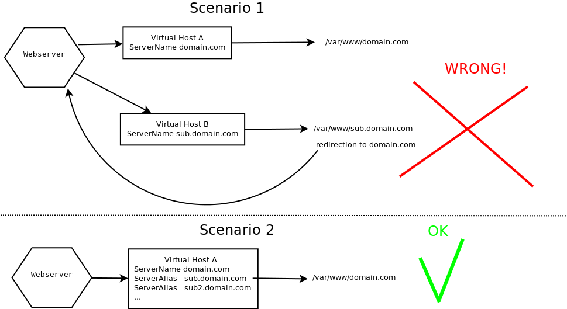

Beschreibung¶
Mit einer einzigen Joomla-Installation unterschiedliche Webseiten mit jeweils eigenständigem Design und Startseiteninhalt, und eigenständiger Menustruktur betreiben.
Virtual Domains macht Joomla multidomainfähig und nimmt dabei keine Änderungen am Joomla Core und an den Datenbanken vor. Mit wenigen Klicks trägst du beliebig viele verfügbare Domains im Backend der Komponente ein und weist ihnen Eigenschaften zu.
Es ist empfehlenswert, für jede Subdomain/Domain ein eigenes Template zu installieren.
Aktuelle Version: 1.1-McCoy
Neue Features¶
Features der Komponente¶
- Template Style pro Domain konfigurieren
- Content über Accesslevels einzelnen Domains zuweisen
- Menüpunkte je Domain verbergen/anzeigen
Anforderungen (1.1-McCoy)¶
- Joomla 1.6 oder höher
- PHP 5.2.0 oder höher
- Eine oder mehrere Serveraliase deiner Domain
oder
Zwei oder mehrere Virtuelle Hosts, die auf die gleich Document Root zeigenAnmerkung: Weiterleitungen per Rewite-Rule in einer .htaccess führen nicht zum gewünschten Ergebnis.
Mehr über Server Aliase
Domains Setup
Damit VD funktionieren kann musst du bei der Einrichtung deiner zusätzlichen Domains folgende Regeln beachten:
- Gleicher Server:
Alle Domains müssen auf dem selben Server liegen und unter gleicher IP-Adresse erreichbar sein
- Gleicher Ordner:
Der Webserver muss für alle Domains auf den gleichen Ordner zeigen, den Ordner in dem dein Joomla installiert ist
- Keine Umleitung
Es darf keine Umleitung wie z.B. per .htaccess oder eine Frameumleitung verwendet werden.
Es ist nahezu unmöglich ein konkretes Vorgehen zu beschreiben, da es eine Vielzahl unterschiedlicher Administrationstools für Webhosting gibt. Auch die Bezeichnungen unterscheiden sich. Häufig wird der Begriff Addon-Domain für die benötigte Konfiguration der Domains verwendet.
Zur Veranschaulichung des zu erzielenden Ergebnisses dient die folgende Grafik.
Hintergrund: Ein Webserver verwendet sogenannte Virtual Host Container. Das sind einfache Textdateien, die die Konfiguration einer Domain beschreiben. Eine der wichtigsten Einstellungen ist der Ordner deiner Webseite. In vielen Fällen hat jede Domain ihren eigenen Ordner. Für unser Ziel ist es jedoch nötig, das alle Domains den selben Ordner verwenden. Wir benötigen also nur einen einzigen Virtual Host Container, in dem die zusätzlichen Domains als "ServerAlias" aufgelistet sind.
Installation¶
- Lade das VD-Paket für deine Joomla-Version von der Projektseite herunter
- Wähle im Joomla-Backend Erweiterungen⇒Installieren/Deinstallieren bzw. Erweiterungen⇒Erweiterungsmanager, klicke auf Hochladen, wähle das Paket aus deinem Download-Ordner und klicke auf Hochladen&Installieren.
Das Paket wird installiert und die Systemmeldung "Paket-Installation erfolgreich" wird angezeigt. - Wähle Erweiterungen⇒Plugin-Manager, filtere nach System Plugins und klicke auf den Titel der Spalte Reihenfolge, gib in der Zeile System - virtualdomainsim Feld Reihenfolge die Ziffer 1ein, um das das Plugin als erstes zu laden. Dies ist notwendig, damit das Routen korrekt funktioniert.
- Klicke auf Status, um das Plugin zu aktivieren.
Du kannst nun deine Domains/Subdomains konfigurieren. (Komponenten⇒Virtualdomains)
Backend Handbuch (1.2-McCoy)¶
Virtual Domains Menü
| Virtualdomains | Parameter | About |
Virtualdomains-Manager¶
Beschreibung¶
Du kannst hier neue Domains eintragen und bereits angelegte Domains in der Vorschau anzeigen.
Screenshot¶
{kind=link}
Toolbar¶

- Bearbeiten/Neu: Bearbeite Domains auf der Detail-Seite oder füge neue Domains hinzu
- Konfiguration: Komponenten Konfiguration
Spalten¶
- Domain: Klicke auf den Link um eine Domain auf der Detailseite zu bearbeiten
- Vorschau:Zeige die Domain im Vorschau-Frame an und teste ob alles wie gewünscht funktioniert. (Du kannst Höhe und Breite in der Komponenten-Konfiguration an die Einstellungen deines Monitors anpassen)
- Default Domain (wichtig! Nicht optional)): Klicke auf das Stern-Symbol, um die Domain als Default-Domain zu kennzeichnen. Diese Domain übernimmt ihre Eigenschaften aus der allgemeinen Joomla Konfiguration.
Detail-Seite¶
Beschreibung¶
Du kannst hier die Eigenschaften einer Domain festlegen.
Screenshot¶
{kind=link}
Felder¶
- Domain Name: Der Name einer Domain/Subdomain (FQDN) die auf deine Joomla-Installation gerichtet ist. Beachte, dass VD den www-Alias deiner Domains automatisch berücksichtigt. Gib hier also nicht www.mydomain.com ein, wenn der Name deiner Standard-Domain mydomain.com lautet.
- Home Menüpunkt: Dies wird die Starseite der Domain, ungeachtet der Einstellungen in der Joomla Konfiguration.
- Template: Definiere ein Template Style für diese Domain.
- Freigabe: Domain wird verwendet.
- Home Menüpunkt Übersetzung: Wenn deine Seite mehrsprachig ist, kannst du hier optional eine nur in dieser Domain gültige Übersetzung des Start-Menüpunkts eingeben.
- Menüfilter: Wähle optional Menüpunkte, die in dieser Domain angezeigt/nicht angezeigt werden sollen.
- Vererbung von Zugriffsebenen: Wähle optional eine oder mehrere Domains, deren Zugriffsrechte die aktuell bearbeitete Domain erben soll.
Hinweis: Jede Domain wird einer gleichnamigen Zugriffsebene zugeordnet. Dies ermöglicht z.B. Kategorien, Module oder andere Inhalte nur in bestimmten Domains verfügbar zu machen.
Parameter¶
{kind=link}
- Template Styles: Bestimmt das Template-Style-Verhalten dieser Domain. Es können folgende Werte definiert werden.
- Globale Einstellung: Die Einstellung in den Optionen der Komponente wird verwendet
- VD überschreibt Joomla: Es wird immer der für diese Domain definierte Template-Style angezeigt.
- VD überschreibt den Startmenupunkt: Nur die Startseite dieser Domain wird im definierten Template-Style angezeigt.
- Joomlakonfiguration verwenden: Es wird in allen Fällen der in der Joomla-Konfiguration definierte Template-Style angezeigt.
- Meta Description: Eine alternative Meta Description im Kopf des HTMl-Dokuments.
- Keywords: Alternative Keywords im Kopf des HTMl-Dokuments.
- Custom Parameters: Erfasse die Werte für Parameter, die du im Parametermanagervon VD konfiguriert hast .
Parameter Manager¶
Beschreibung¶
Eigene Parameter können von Programmierern für Domain-spezifische Anpassungen genutzt werden. Hier kannst du Parameter-Keys festlegen. Wenn du Parameter gespeichert hast, werden Sie auf der Domain Detail-Seite angezeigt, auf der du unterschiedliche Werte für jede Domain definieren kannst.
Schlüssel und Werte werden zu den Variablen $_REQUEST oder $GLOBALS hinzugefügt.
Was zum Teufel soll ich damit anfangen?
Screenshot¶

Fields¶
- Name: Parameter Key
- Aktion:
- Keine:Der Parameter wird nicht zu $GLOBALS oder $_REQUEST hinzugefügt (z.B., weil die Werte aus der Datenbank gelesen werden)
- Request: Zu $_REQUEST hinzufügen
- Globals: Zu $GLOBALS hinzufügen
- Nur Startseite: Der Parameter wird nur beim Aufruf der Startseite genutzt.
About¶
Beschreibung¶
Informationen über die Entwickler und den Support
Komponenten-Konfiguration¶
Zugang¶
Wähle Komponenten → Virtualdomains vom Drop-Down-Menu des Joomla-Admin-Panels und klicke anschließend auf den Konfiguration/Einstellungen Button der Toolbar.


Beschreibung¶
Hier kannst du das globale Verhalten in bezug auf Template-Styles und die Größe des Domain-Vorschau-Frames einstellen.
Screenshot¶
{kind=link}
General¶
Template Styles: Bestimmt das Template-Style-Verhalten dieser Domain. Es können folgende Werte definiert werden.- Globale Einstellung: Die Einstellung in den Optionen der Komponente wird verwendet
- VD überschreibt Joomla: Es wird immer der für diese Domain definierte Template-Style angezeigt.
- VD überschreibt den Startmenupunkt: Nur die Startseite dieser Domain wird im definierten Template-Style angezeigt.
- Joomlakonfiguration verwenden: Es wird in allen Fällen der in der Joomla-Konfiguration definierte Template-Style angezeigt.
Vorschau Optionen¶
Konfiguriere die Größe des Vorschau-Frames. Passe sie, falls notwendig, an deine Monitoreinstellungen an.
- Frame Breite: Die Breite des Vorschaufensters
- Frame Höhe: Die Höhe des Vorschaufensters
Plugin¶
Zugriff zum Plugin¶
Wähle Erweiterungen → Plugin Manager vom Drop-Down-Menu des Joomla-Admin-Panels und filtere nach System Plugins. Der Eintrag System - Virtualdomains wird aufgelistet.
Beschreibung¶
Das VD Plugin überschreibt die Joomla Einstellungen gemäß deinen Definitionen im Virtualdomains Manager wenn die Webseite unter einer der konfigurierten Domains/Subdomains augerufen wird.
Quick'n Dirty Beispiel¶
Einführung¶
Vor allem drei Eigenschaften ändert VD bei den zusätzlichen Domains:
- Das Erscheinungsbild: Der Domain wird ein alternatives Template zugewiesen.
- Die Startseite: Entgegen der Einstellung in der Site-Konfiguration von Joomla wird der Domain ein alternativer Menupunkt als Startseite zugewiesen.
- Für jede Domain existiert eine eigene Zugriffsebene, der der Besucher temporär zugeordnet wird (in der Session). Der Zugriff (in der Regel die Anzeige) auf Elemente kann so für jede Domain geregelt werden.
Mit wenigen Eingriffen kann unter diesen Voraussetzungen eine komplett unterschiedliche Navigationsstruktur eingerichtet werden.
Beispiel¶
- Der Domain main.domain.tld wurde als Startseite der Menupunkt mit dem Namen "Home" und das Template ja_purity zugewiesen. (Sagen wir, der Menüpunkt "Home" befinde sich im Menü "firstmenu").
- Der Domain second.domain.tld wurde der Menüpunkt "News" und das Template 'Beez' zugewiesen. (Sagen wir der Menüpunkt "News" sei die Blogansicht der Kategorie "News" und befinde sich im Menü "secondmenu").
- Wir möchten erreichen, dass unter beiden Domains das Menu "Firma" erscheint. (Sagen wir "Firma" enthielte verschiedene Links, die Informationen über unsere Firma anbieten).
Umsetzung (Beispiel)
- Lege die erforderlichen Menüpunkte im Menu Manager an.
- Erstelle im Virtual Domains Manager den Eintrag first.domain.tld speichere und klicke auf das Stern-Symbol in der Spalte Default Domain. first.domain.tld wird im in Joomla definierten Standard-Template angezeigt werden.
- Erstelle den Eintrag second.domain.tld, konfiguriere unterschiedliche Template-Styles und definiere den Menüpunkt "News" als Home-Menüpunkt.
- Erstelle im Joomla Backend unter Extensions → Modules ein Menumodul für jede Domain, weise ihm die gleichnamige Zugriffseben der jeweiligen Domain und eine geeignete Templateposition zu.
Jede Domain hat nun ein anderes Design und sowohl je ein Menu, das auf separate Inhalte verweist.
Empfehlungen¶
- Konflikte mit Third-Party-Erweiterungen sind nicht auszuschließen, zumal dann nicht, wenn diese die Joomla-Api umgehen. Daher sollte das VD-Plugin an der ersten Stelle der System-Plugins positioniert werden.
Testumgebung aufsetzen
Windows¶
In Arbeit
Linux (Debian/Ubuntu)¶
Beschreibung¶
Im Folgenden wird beschrieben, wie du auf deine lokale Joomla Installation über Adressen wie http://vhost1.dev, http://vhost2.dev zugreifen kannst, indem du einige Zeilen in der /etc/hosts hinzufügst und einen virtuellen Host auf dem Apache Webserver konfigurierst.
Damit kannst du Virtualdomains auf deinem Rechner lokal testen.
Voraussetzungen¶
Ein installierter Apache2.
Namensauflösung aktivieren¶
- Editiere /etc/hosts
sudo nano /etc/hosts
- Unterhalb der Zeile "
127.0.0.1 localhost.localdomain localhost", füge das Folgende hinzu und speichere:
127.0.0.1 vhost1.dev www.vhost1.dev 127.0.0.1 vhost2.dev www.vhost2.dev
- Prüfe das Ergebnis:
ping vhost1.dev
Antwort:
PING vhost1.dev (127.0.0.1) 56(84) bytes of data. 64 bytes from localhost.localdomain (127.0.0.1): icmp_req=1 ttl=64 time=0.022 ms 64 bytes from localhost.localdomain (127.0.0.1): icmp_req=2 ttl=64 time=0.021 ms
Apache Konfiguration prüfen¶
Stelle sicher, dass die folgenden Einstellungen korrekt sind:
- Öffne /etc/apache2/apache2.conf und stelle sicher, dass das Incude Statement in der letzten Zeile aktiv ist:
# Include the virtual host configurations: Include /etc/apache2/sites-enabled/
- Öffne /etc/apache2/ports.conf und prüfe die folgenden Einstellungen:
NameVirtualHost *:80 Listen 80
Konfiguriere einen virtuellen Host¶
- Kopiere /etc/apache2/sites-available/default:
sudo cp /etc/apache2/sites-available/default /etc/apache2/sites-available/vhost.conf
- Passe vhost.conf an:
nano /etc/apache2/sites-available/vhost.conf
- Ersetze den Eintrag für DocumentRoot mit dem Pfad auf deine Joomla Installation und füge die ServerAliase hinzu:
ServerName vhost1.dev ServerAlias www.vhost1.dev ServerAlias vhost2.dev www.vhost2.dev DocumentRoot /var/www/your-joomla
- Ersetze den Eintrag für DocumentRoot mit dem Pfad auf deine Joomla Installation und füge die ServerAliase hinzu:
- Lege einen symbolischen Link:
sudo ln -s /etc/apache2/sites-available/vhost.conf /etc/apache2/sites-enabled/vhost.conf
- Lade den Apache Webserver neu:
sudo /etc/init.d/apache2 reload
Nun sollte deine Joomla-Seite angezeigt werden, wenn du http://vhost1.dev oder http://vhost2.dev in der Adressleiste deines Browsers eingibst.
Parameter verwenden¶
Beschreibung¶
Parameter können eingesetzt werden, um Fallunterscheidungen bezüglich der verschiedenen Domains zu treffen.
Beispiel¶
Wir bitten für die Schlichtheit des folgenden Beispiels um Entschuldigung. Das Ziel könnte sicher auch auf ganz anderen Wegen erreicht werden:
Angenommen du entschließt dich, ein einziges Template für zwei unterschiedliche Domains einzusetzen, z.B weil die Seiten sich vor allem in der Sprache untercheiden sollen. Zusätzlich sollen aber unterschiedliche Logos angezeigt werden.
Definiere dazu den Parameter "showlogo" und wähle die Aktion "Request".
Erfasse auf der Detailseite von domain first.mydomain.com für "showlogo" den Wert "logo1.png", und für second.mydomain.com den Wert "logo2.png" (Beide Bilder hast du im images-Ordner unterhalb der Joola-Root abgelegt)
Die Eingabe der Parameter hat den gleichen Effekt, wie das Anhängen des Querys "showlogo=logo1.png" an die URL:
http://first.mydomain.com?showlogo=logo1.jpg oder http://first.mydomain.com/about/?showlogo=logo1.jpg .
Der folgende Code in der index.php des Templates, vervollständigt die Sache:
<img src="images/<?php echo JFactory::getVar('showlogo') ?>" />
Server Aliase¶
Wahrscheinlich kannst du deine Website per Browser unter zwei Adressen erreichen:
Domain: mycompany.com
Alias: www.mycompany.com
Dazu müssen zwei Voraussetzungen erfüllt sein:
- Auf dem Nameserver deines Providers verweist sowohl mycompany.com als auch www.mycompany.com auf die IP-Adresse des Webservers, auf dem dein Internetangebot liegt.
- Auf dem Webserver ist www.mycompany.com als Alias von mycompany.com konfiguriert.
Auf die gleiche Weise lassen sich weitere Aliase, wie z.B. www2, anlegen. Das übernimmt entweder dein Provider, oder du kannst die Einstellung selbst über ein Server-Konfigurations-Tool wie Plesk vornehmen, soweit verfügbar.
Anmerkung: Alternativ kann auch ein neuer sog. virtueller Host www2.mycompany.com auf dem Webserver angelegt werden, der auf die gleiche Document-Root zeigt. Das Ergebnis ist das gleiche.
Achtung: VD funktioniert nicht mit einer Domain-Weiterleitung über eine .htaccess-Datei.